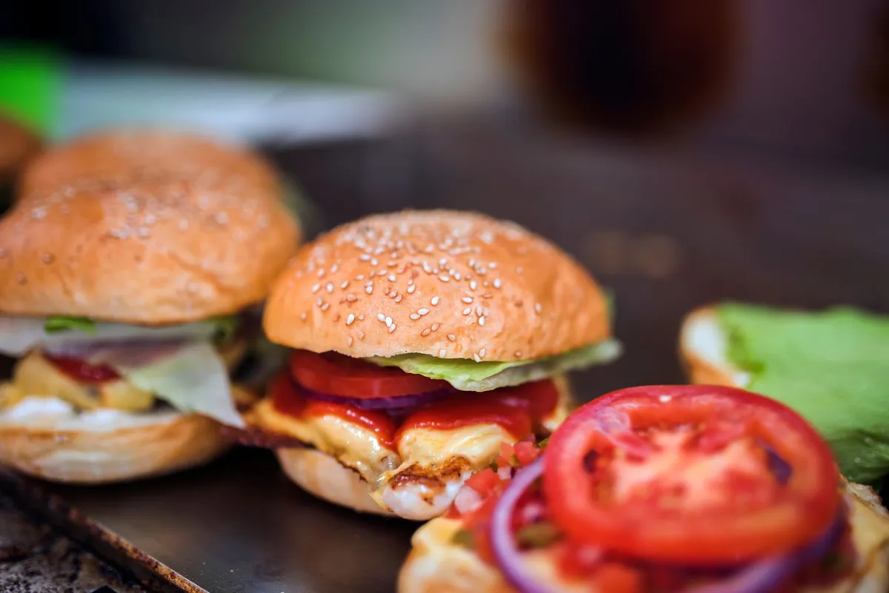

Sistema de mesas e comandas com QR Code: salão e delivery no mesmo painel

Comanda de papel funciona até o primeiro sábado cheio: letra que ninguém entende, item que não chegou na cozinha, mesa que pagou e saiu sem ninguém conferir. Um sistema de mesas e comandas resolve isso — e quando ele é o mesmo sistema do delivery, o salão e a entrega param de brigar pela cozinha.
Como funciona a comanda com QR Code
- Cada mesa ganha um QR Code próprio (o sistema gera a folha pronta para imprimir).
- O cliente aponta a câmera, abre o cardápio e pede — sem baixar aplicativo.
- O pedido cai direto na comanda daquela mesa e sai na impressora da cozinha.
- O garçom só entrega. Quem preferir pedir ao garçom, ele lança pelo PDV no celular.
- No fim, a conta da mesa está pronta: é só receber e fechar.
Mapa de mesas em tempo real
No painel você vê o salão inteiro com o status de cada mesa: livre, aguardando, ocupada e em limpeza. Dá para saber na hora quem está esperando há muito tempo e qual mesa pode receber o próximo cliente.
O que vem incluso
- QR Code por mesa, com folha pronta para imprimir
- Conta e pagamentos por mesa
- Comandas de balcão e totem de autoatendimento
- Cardápio rodando também em tablet na mesa
- Pedidos de mesa, delivery e marketplaces na mesma fila da cozinha
- Faturamento das mesas separado do delivery no relatório
Mesa + delivery: por que no mesmo sistema
Restaurante que tem salão e delivery em sistemas diferentes vive com duas filas de cozinha e dois fechamentos. Com tudo no mesmo painel, a cozinha vê a ordem real dos pedidos e o fechamento de caixa sai num lugar só. Leia como montar o QR Code em QR Code para cardápio digital.
Comanda digital aumenta o ticket
Cliente que pede pelo celular vê foto, adicional e sugestão "peça também" em cada item — e pede mais sobremesa e bebida do que pediria esperando o garçom passar. Veja estratégias em fidelidade e ticket médio.
Quanto custa
Mesas e comandas estão no mesmo plano do cardápio digital: R$67/mês fixo, sem taxa por pedido e sem cobrança por mesa. Veja o cardápio digital para restaurante.
Buscas relacionadas
O que donos de restaurante e delivery pesquisam antes de contratar — cada busca leva para a página que responde a ela:
Perguntas frequentes
O cliente precisa baixar aplicativo para pedir na mesa?
Não. Ele aponta a câmera para o QR Code da mesa e o cardápio abre no navegador do celular.
O pedido da mesa vai direto para a cozinha?
Sim. Ele entra na comanda da mesa, aparece no painel e é impresso automaticamente na cozinha.
Dá para o garçom lançar o pedido?
Dá. O garçom usa o PDV no celular ou tablet e o pedido vai para a mesma comanda.
Consigo ver quais mesas estão ocupadas?
Sim. O mapa de mesas mostra em tempo real se cada mesa está livre, aguardando, ocupada ou em limpeza.
Tem custo por mesa ou por QR Code?
Não. Mesas, comandas e QR Codes fazem parte do plano de R$67/mês fixo.
Pare de pagar comissão por pedido
Cardápio digital próprio por R$67/mês fixo. Nossa equipe configura pra você e o suporte está incluso.
Criar Meu Cardápio Agora →